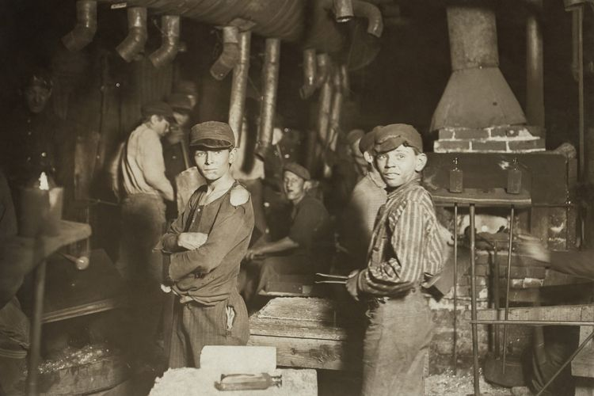
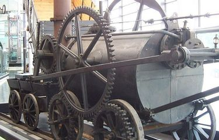
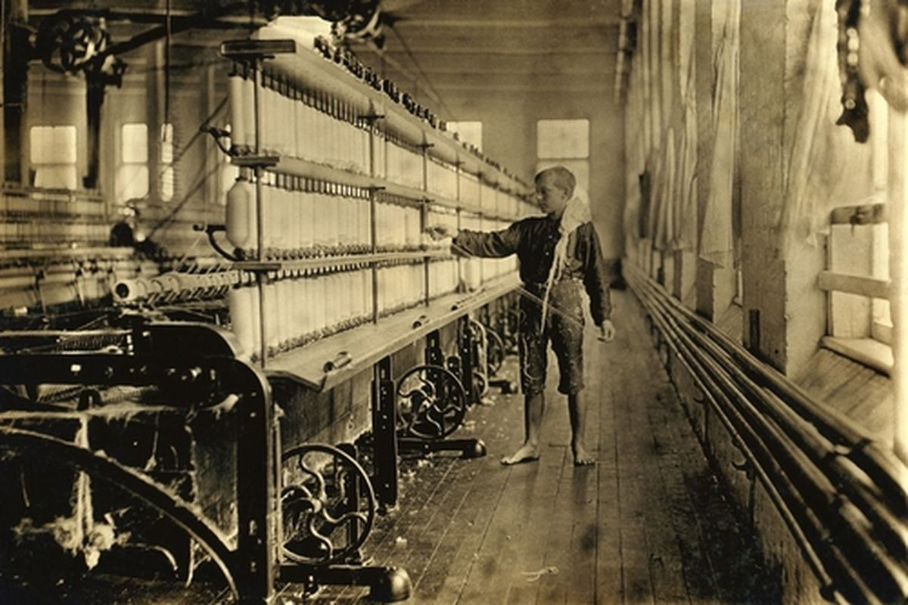

-

(Detikcom)
Sejarah Singkat
Revolusi Industri 1.0, yang berlangsung antara tahun 1760 hingga 1850, menandai peralihan signifikan dari tenaga kerja manual dan hewan ke penggunaan mesin dalam berbagai sektor seperti pertanian, manufaktur, pertambangan, dan transportasi. Perkembangan ini dimulai di Britania Raya dan kemudian menyebar ke Eropa Barat, Amerika Utara, Jepang, hingga ke seluruh dunia. Salah satu inovasi kunci pada periode ini adalah mesin uap, yang berperan penting dalam meningkatkan efisiensi produksi dan transportasi. Perubahan mendasar ini tidak hanya memengaruhi aspek ekonomi, tetapi juga membawa dampak sosial dan budaya yang mendalam, termasuk urbanisasi dan perubahan struktur masyarakat.
(WIkipedia)
-

Latar Belakang
(Kompas.com)
Latar belakang terjadinya Revolusi Industri 1.0 berawal dari kebutuhan akan efisiensi dalam produksi dan transportasi. Sebelum revolusi ini, masyarakat mengandalkan tenaga manusia dan hewan dalam berbagai sektor, seperti pertanian, manufaktur, dan pertambangan. Namun, pertumbuhan populasi yang pesat serta meningkatnya permintaan barang mendorong inovasi teknologi. Penemuan mesin uap oleh James Watt pada abad ke-18 menjadi pendorong utama perubahan ini, memungkinkan produksi massal dan transportasi yang lebih cepat serta efisien. Revolusi ini dimulai di Britania Raya, didukung oleh ketersediaan sumber daya alam seperti batu bara dan besi, modal dari perdagangan global, serta stabilitas politik yang mendukung inovasi industri. Dampaknya sangat luas, mencakup perubahan struktur sosial, urbanisasi, dan ekspansi kolonialisme untuk memenuhi kebutuhan bahan baku serta pasar baru.
(WIkipedia)
-

(Kompas.com)
Penemuan
Revolusi Industri 1.0, yang berlangsung antara tahun 1760 hingga 1850, ditandai oleh sejumlah penemuan penting yang mengubah berbagai sektor kehidupan. Berikut beberapa penemuan utama:
1. Bor benih (seed drill): Diciptakan oleh Jethro Tull pada tahun 1701, alat ini meningkatkan efisiensi penanaman benih di sektor pertanian.
2. Kumparan terbang (flying shuttle): Ditemukan oleh John Kay pada tahun 1733, inovasi ini mempercepat proses pemintalan dalam industri tekstil.
3. Mesin uap: Meskipun konsep awalnya telah ada, James Watt pada abad ke-18 mengembangkan dan menyempurnakan mesin uap yang lebih efisien, yang kemudian menjadi pendorong utama dalam berbagai industri, termasuk transportasi dan manufaktur.
Penemuan-penemuan ini berkontribusi signifikan terhadap transformasi ekonomi dan sosial selama periode Revolusi Industri 1.0.(WIkipedia)
-

(Sasana Digital)
Dampak
Revolusi Industri 1.0 membawa dampak signifikan dalam berbagai aspek kehidupan. Secara positif, revolusi ini meningkatkan efisiensi produksi melalui mekanisasi, khususnya di sektor tekstil dan pertambangan, yang berkontribusi pada pertumbuhan ekonomi dan peningkatan standar hidup. Selain itu, perkembangan transportasi seperti kereta api mempermudah distribusi barang dan mobilitas manusia.
Namun, dampak negatifnya juga terasa, antara lain kondisi kerja yang buruk di pabrik-pabrik, termasuk jam kerja panjang dan upah rendah. Urbanisasi cepat menyebabkan kepadatan penduduk dan masalah sanitasi di kota-kota. Selain itu, penggunaan mesin uap meningkatkan konsumsi batu bara, yang berkontribusi pada polusi lingkungan.(WIkipedia)
-

(Kompas.com)
Tokoh Penting
Berikut beberapa tokoh penting dalam Revolusi Industri 1.0:
James Watt – Menyempurnakan mesin uap, mendorong kemajuan industri.
Richard Arkwright – Mengembangkan sistem pabrik modern dan mesin pemintal otomatis.
Samuel Crompton – Menciptakan "spinning mule" untuk produksi benang berkualitas tinggi.
Eli Whitney – Menemukan gin kapas, mempercepat pemisahan serat kapas.
Henry Cort – Mengembangkan proses "puddling" untuk produksi besi berkualitas tinggi.
Tokoh-tokoh ini berkontribusi besar terhadap perkembangan industri dan ekonomi.(WIkipedia)